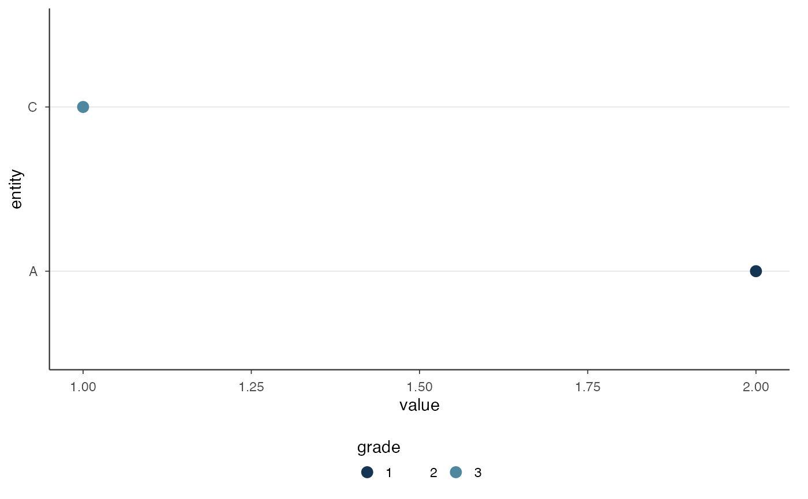

Keep Grade Colors Consistent Across Views
scale_colour_grade.RdDiscrete color and fill scales represent grade membership. The number of
grades in the full report is supplied so that subsets retain the original
grade colors and legend. scale_color_grade() is the spelling alias of
scale_colour_grade(); scale_fill_grade() uses the same palette for fill.
Usage
scale_colour_grade(n_grades = NULL, ...)
scale_color_grade(n_grades = NULL, ...)
scale_fill_grade(n_grades = NULL, ...)Arguments
- n_grades
Number of grades in the full object, from 1 to 64. With
NULL, colors follow the discrete levels present in the data; specify the full count when a displayed subset omits grades.- ...
Additional arguments passed to
ggplot2::discrete_scale(). The helper already setsaesthetics,palette,dropandname, and setslimitswhenn_gradesis supplied; do not pass those arguments again.
Details
Map grades as discrete labels, for example factor(grade). With an explicit
full count, limits are as.character(seq_len(n_grades)) and drop = FALSE.
Absent grades remain on the scale. The same full count must be used across
views; inferring a count from a displayed subset can assign different colors.
Grade 1 has highest priority. Equal colors indicate shared grade membership,
which withholds comparisons rather than asserting target equality.
Examples
# Grade 2 is absent from the display, but keeps its place in the full scale.
d <- data.frame(entity = c("A", "C"), value = c(2, 1), grade = factor(c(1, 3)))
ggplot2::ggplot(d, ggplot2::aes(value, entity, colour = grade)) +
ggplot2::geom_point(size = 3) + scale_colour_grade(n_grades = 3) +
theme_postrank()

Open full-size figure